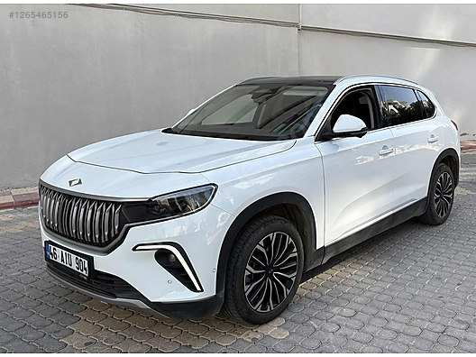
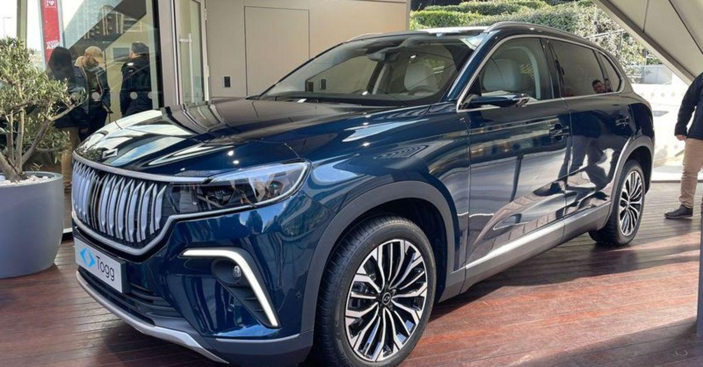

T10X V1
TOGG'un ilk versiyonu olan T10X V1, modern tasarımı ve güçlü performansı ile dikkat çekiyor.

T10X V2
Yenilikçi özelliklerle donatılmış T10X V2, daha yüksek performans sunuyor.

T10X RWD
Arkadan itiş versiyonu ile T10X, sürüş keyfini zirveye taşıyor.